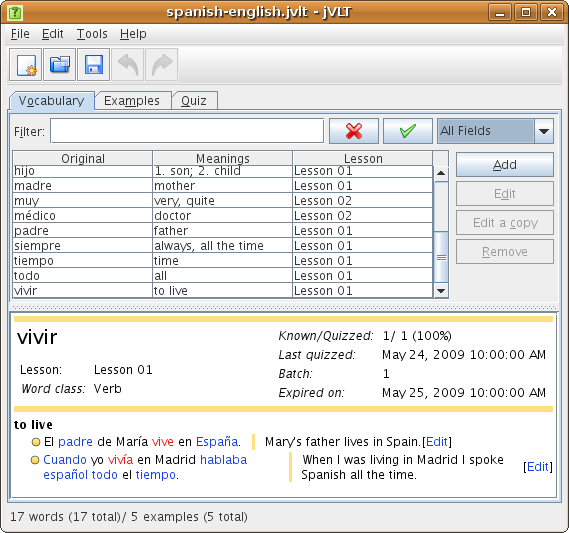

jVLT - a vocabulary learning tool
Documentation
|
jVLT - a vocabulary learning tool |
|
Documentation
|
The jVLT manualThese pages desribe the basic functionality of jVLT. jVLT is a tool that allows you to manage and to learn your vocabulary. You can specify examples that help you to memorize the usage of words. jVLT also can perform quizzes using a flash card system which is similar to the selective learning system proposed by German psychologist Sebastian Leitner.Table of Contents |